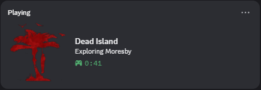

My Tools & Mods
A complete collection of my C++ tools, mod loaders, and desktop applications.

Dying Light Restoration Project
A large mod for Dying Light with a focus on restoring cut content from the game.

Dying Light 2: The Outcast
"The Outcast" - a complex mod for Dying Light 2 which aims to restore as much content from 2019 as possible. It includes big changes in graphics/postprocessing, gameplay, weather, UI/UX, NPC models, parkour and textures. I work as a engine specialist on this project

Chrome Engine 5 Community DevTools
A comprehensive desktop application featuring a Texture Editor, Script Editor, Varlist Editor, and Map Script Editor that works for all games on Chrome Engine 5.
Not Yet Released
Dying Light And DI(R)DE Mod Loader
A lightweight PAK & RPACK loader for Dying Light and Dead Island Definitive Edition made in C++.
View On GitHub
Far Cry 4 Custom Client
A reverse engineered executable for Far Cry 4 with custom mod loading support.
View On GitHub
Dead Island Discord RPC
A .asi plugin for Dead Island GOTY that adds full discord rich presence.
View On GitHub
Dying Light 2 Custom .pak Loader
A mod loader for Dying Light 2 that can load custom .pak files.
View On GitHub
Swizzler
A simple program to swizzle textures and glitch colours with 96 possible variations.
View On GitHub
Far Cry 2 Dunia Fixes
A comprehensive ASI plugin for Far Cry 2 that overhauls the engine's legacy memory management, optimizes CPU multithreading, fixes long-standing graphical bugs, and adds modern quality-of-life features.
View On GitHubRP5L Extractor
A extractor for the .rpack file's used in Dead Island and Call Of Juarez The Cartel.
View On GitHub